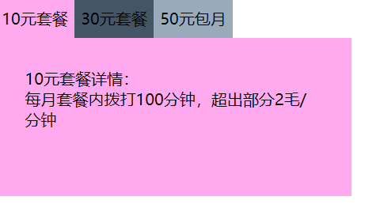
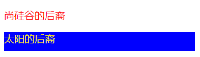
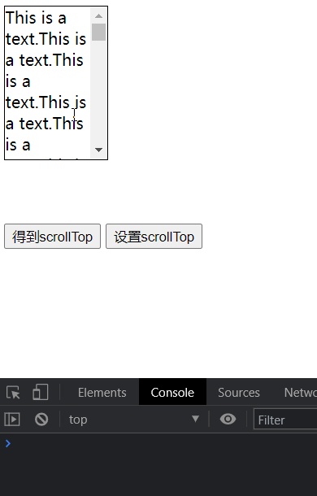

无标题 发表于 2025-03-26 | 更新于 2025-03-30
| 总字数: 1.7k | 阅读时长: 7分钟 | 浏览量: |
jQuery 工具方法
工具方法
描述
$.each(object,[callback])通用例遍方法，可用于例遍对象和数组
$.type(obj)检测 obj 的数据类型
$.isArray(obj)测试对象是否为数组
$.isFunction(obj)测试对象是否为函数
$.isNumeric(value)测试对象是否为数字
$.parseJSON(json)接受一个 JSON 字符串，返回解析后的对象
$.each()
1 2 3 4 5 6 7 8 9 10 var obj = { name : 'Tom' , setName : function (name ) { this .name = name; } } $.each (obj, function (key, value ) { console .log (key, value); });
$.trim()
1 2 3 var str = ' ddd ' ;console .log ($.trim (str));
$.type()
1 2 console .log ($.type ($), $.type ($()));
$.isArray()
1 2 console .log ($.isArray ($('body' )), $.isArray ([]));
$.isFunction()
1 2 console .log ($.isFunction ($), $.isFunction ($()));
$.isNumberic()
1 2 console .log ($.isNumeric ('a' ), $.isNumeric ('2' ), $.isNumeric (2 ));
$.parseJSON()
1 2 3 4 5 var jsonObj = '{"name":"Tom", "age": 18}' ;console .log ($.parseJSON (jsonObj)); var jsonArr = '[{"name":"Tom", "age": 18}, {"name":"Jack", "age": 28}]' ;console .log ($.parseJSON (jsonArr));
练习
1 2 3 4 5 6 7 8 9 10 11 12 13 14 15 16 <ul id ="tab" > <li id ="tab1" value ="1" > 10元套餐</li > <li id ="tab2" value ="2" > 30元套餐</li > <li id ="tab3" value ="3" > 50元包月</li > </ul > <div id ="container" > <div id ="content1" > 10元套餐详情：<br > 每月套餐内拨打100分钟，超出部分2毛/分钟 </div > <div id ="content2" style ="display:none" > 30元套餐详情：<br > 每月套餐内拨打300分钟，超出部分1.5毛/分钟 </div > <div id ="content3" style ="display:none" > 50元包月详情：<br > 每月无限量随心打 </div > </div >
1 2 3 4 5 6 7 8 9 var $containers = $('#container>div' );var curIndex = 0 ;$('#tab>li' ).click (function ( $containers[curIndex].style .display = 'none' ; curIndex = $(this ).index (); $containers[curIndex].style .display = 'block' ; });

jQuery 操作属性
属性
描述
attr()设置或返回被选元素的属性值
removeAttr()从每一个匹配的元素中删除一个属性
prop()获取在匹配的元素集中的第一个元素的属性值
removeProp()用来删除由.prop()方法设置的属性集
addClass()为每个匹配的元素添加指定的类名
removeClass()从所有匹配的元素中删除全部或者指定的类
toggleClass()如果存在（不存在）就删除（添加）一个类
html()取得第一个匹配元素的 html 内容
text()取得所有匹配元素的内容
val()获得匹配元素的当前值
attr()、removeAttr()
1 2 3 4 5 6 7 8 console .log ($('div:first' ).attr ('title' )); $('div' ).attr ('name' , 'atguigu' ); $('div' ).removeAttr ('title' ); $('div' ).attr ('class' , 'guiguClass' );
addClass()、removeClass()
1 2 3 4 $('div' ).addClass ('abc' ); $('div' ).removeClass ('guiguClass' );
html()、val()
1 2 3 4 5 6 7 8 console .log ($('ul>li:last' ).html ()); $('ul>li:first' ).html ('<h1>mmmmmmmmm</h1>' ); console .log ($(':text' ).val ()); $(':text' ).val ('atguigu' );
prop()、removeProp()
1 2 3 4 5 6 7 8 9 var $checkbox = $(':checkbox' );$('button:first' ).click (function ( $checkbox.prop ('checked' , true ); }); $('button:last' ).click (function ( $checkbox.prop ("checked" , false ); });
attr()：操作属性值为非布尔值的属性件prop()：专门操作属性值为布尔值的属性
jQuery 操作 CSS
CSS
描述
css()访问匹配元素的样式属性
offset()获取匹配元素在当前视口的相对偏移
position()获取匹配元素相对父元素的偏移
scrollTop()获取匹配元素相对滚动条顶部的偏移
scrollLeft()获取匹配元素相对滚动条左侧的偏移
height()取得匹配元素当前计算的高度值（px）
width()取得第一个匹配元素当前计算的宽度值（px）
innerHeight()获取第一个匹配元素内部区域高度（包括补白、不包括边框）
innerWidth()获取第一个匹配元素内部区域宽度（包括补白、不包括边框）
outerHeight()获取第一个匹配元素外部高度（默认包括补白和边框）
outerWidth()获取第一个匹配元素外部宽度（默认包括补白和边框）
css()
1 2 3 4 5 6 7 8 9 10 11 console .log ($('p:first' ).css ('color' )); $('p' ).css ('color' , 'red' ); $('p:eq(1)' ).css ({ color : '#ffee11' , backgroundColor : 'blue' , width : 300 , height : 30 });

offset 和 position
1 2 3 4 5 6 7 8 9 10 11 12 13 14 15 16 17 18 19 20 21 22 $('#btn1' ).click (function ( var offset1 = $('.div1' ).offset (); console .log (offset1.left , offset1.top ); var offset2 = $('.div2' ).offset (); console .log (offset2.left , offset2.top ); var position1 = $('.div1' ).position (); console .log (position1.left , position1.top ); var position2 = $('.div2' ).position (); console .log (position2.left , position2.top ); }); $('#btn2' ).click (function ( $('.div2' ).offset ({left : 0 , top : 0 }); });
1 2 3 4 5 6 7 8 9 10 $('#btn1' ).click (function ( console .log ($('div' ).scrollTop ()); console .log ($(document .documentElement ).scrollTop () + $(document .body ).scrollTop ()); }); $('#btn2' ).click (function ( $('div' ).scrollTop (1000 ); $('html,body' ).scrollTop (100 ); });

元素尺寸
内容尺寸
height()：heightwidth()：width
内部尺寸
innerHeight()：height + paddinginnerwidth()：width + padding
外部尺寸
outerHeight(false/true)：height + padding + border 如果是 true，加上 marginouterwidth(false/true)：width + padding + border 如果是 true，加上 margin
1 2 3 4 5 var $div = $('div' );console .log ($div.height (), $div.width ()); console .log ($div.innerHeight (), $div.innerWidth ()); console .log ($div.outerHeight (), $div.outerWidth ()); console .log ($div.outerHeight (true ), $div.outerWidth (true ));